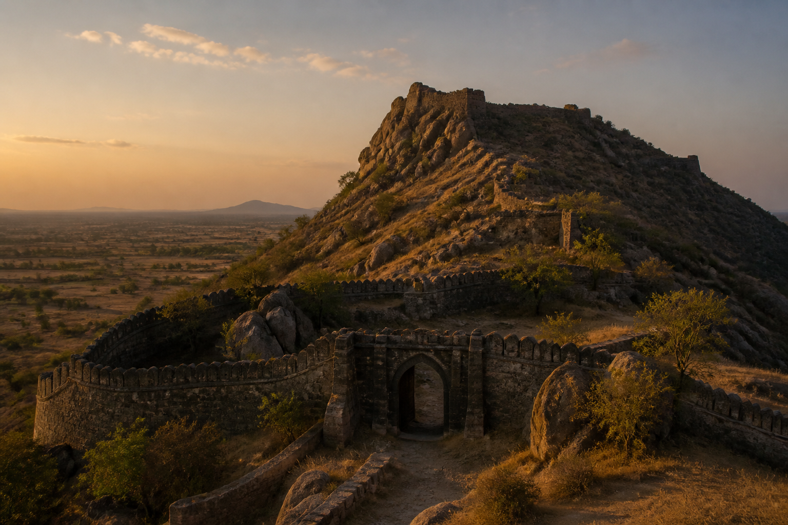

మధ్యయుగ గుంటూరు
తరువాతి తూర్పు Chalukyas నుండి గోల్కొండ పతనం వరకు, ఈ ప్రాంతం కేవలం ఒక పట్టణం మాత్రమే కాదు. ఇది వెలనాడ మరియు Palnadu, Kondavidu కొండలు, పాత గుంటూరు తీరంలో ఒక ఓడరేవు మరియు కోటల గొలుసు. అధికారులు పన్నులు వసూలు చేశారు, ఒకరి కుటుంబాలలో మరొకరు వివాహం చేసుకున్నారు మరియు ఒకప్పటి చక్రవర్తి సంవత్సరాలలో వారి రాళ్లను లెక్కించారు. తరువాత చక్రవర్తులు స్వయంగా దగ్గరయ్యారు.
ఈ శతాబ్దాలు ప్రారంభమైనప్పుడు పట్టణం పేరు అప్పటికే పాతది. Kumturu 669లో వ్రాయబడింది. పదవ శతాబ్దంలో అమ్మ I యొక్క ఎడేరు ఫలకాలు దీనిని Gonturu / Gomturu అని పిలిచాయి. ఆ రూపం ప్రాంతీయ శాసనాలలో పద్నాలుగో శతాబ్దం వరకు కొనసాగుతుంది. జిల్లా పేజీ 1147 మరియు 1158 యొక్క రెండు తరువాతి శాసనాలను కూడా పేర్కొంది.
వెలనాడ మరియు స్థానిక గృహాలు
సుమారు 1075 నుండి సుమారు 1200 వరకు Chalukya–చోళ రాజులు తీర ఆంధ్రపై సామ్రాజ్య పేర్లు. ఆస్థానం చాలా దూరంగా ఉంది. భూమిపై, నాలుగు గృహాలు ఈ మైదానానికి ప్రభువులుగా ఉన్నాయి.
వెలనతి చోడాలు — వెలనాడ దుర్జయలు — సుమారు 1100 నుండి Kakatiyas రాజ్యం 1257 వరకు చందవోలు (చందోలే) వద్ద రాజధానిని కలిగి ఉన్నారు. వారు దుర్జయ కుటుంబానికి చెందినవారు మరియు చోళ విధేయతకు చిహ్నంగా "చోడ"ను ఉపయోగించారు. వారి శాసనాలు ద్రాక్షారామం, చందవోలు, త్రిపురాంతకం, Dharanikota మరియు Chebrolu వద్ద ఉన్నాయి.
గోంక II (సుమారు 1128–1161/62 శాసనాలు; సుమారు 1137 నుండి స్వతంత్ర పాలన) రాళ్లలో ఈ వంశంలో గొప్పవాడు. అతని రికార్డులు గుంటూరు, నాదెండ్ల, ద్రాక్షారామం, Bapatla, కొణిదెన, కాళహస్తి మరియు నిడుబ్రోలులో కనిపిస్తాయి. అతను ఇప్పటికీ వాటిని కులోత్తుంగ II మరియు రాజరాజ II సంవత్సరాలలో పేర్కొన్నాడు. 1147లో అతని అధికారులు మరియు Palnad హైహయాల కామరాజు అధికారులు పెద్దకోడమగండ్లలో ఉమ్మడి బహుమతి ఇచ్చారు. Bapatla అతని రికార్డులలో కమ్మనాడులోని ప్రేంపల్లిగా కనిపిస్తుంది.
సుమారు 1157–1158 Kakatiya ప్రోలా II వెలనాడ యుద్ధంలో మరణించాడు. అనేక ఇళ్ళు దస్తావేజును పేర్కొన్నాయి. తరువాత చక్రవర్తి చోడ II కాకటిప్రోలనిర్ధహన అనే బిరుదును కలిగి ఉన్నాడు; కోట-చోడయ-రాజా 1158లో రాణి సురమ-మహాదేవి యొక్క ద్రాక్షారామ శాసనంలో కూడా. ఈ సైట్ టైటిల్స్ ఏమి చెబుతున్నాయో మాత్రమే చెబుతుంది: అనేక పన్నెండవ శతాబ్దపు ఇళ్ళు ప్రోలా II మరణాన్ని పేర్కొన్నాయి.
Dharanikota (సుమారు 1100–1270) యొక్క కోటలు తమను తాము ధన్యవతి ప్రభువులుగా మరియు అమరేశ్వర భక్తులుగా పిలుచుకున్నారు Amaravati. ప్రధాన రాజధాని Dharanikota; ఇతర స్థానాలు యనమడల, తాడికొండ, త్రిపురాంతకంలో ఉన్నాయి. కోట కెట II యొక్క శాసనాలు Amaravati వద్ద 1182లో ప్రారంభమై 1231 వరకు కొనసాగుతాయి. Kakatiya గణపతిదేవ యనమడల శాఖకు చెందిన బెటరాజుకు గణపంబ అనే కుమార్తెను ఇచ్చాడు; అతని మరణం తరువాత ఆమె తన సోదరి రుద్రమదేవికి విధేయతతో మహామండలేశ్వరగా పాలించింది.
నాదెండ్ల (సుమారు 1100–1282) యొక్క కొండపదుమతులు Kondavidu కొండలకు పశ్చిమాన ఉన్న దేశాన్ని కలిగి ఉన్నారు. Chebrolu శాసనాలు వారిని చతుర్థ-కుల అని పిలుస్తాయి. వారి స్వంత తరువాతి ప్రశస్తి ఏడవ శతాబ్దంలో కుబ్జ Vishnuvardhana నుండి ఒక పూర్వీకుడు డెబ్బై మూడు గ్రామాలను పొందారని చెబుతోంది - మూలం యొక్క చార్టర్-మిత్, పన్నెండవ శతాబ్దపు వాస్తవం కాదు. వారు వెలనాటి చోడల వివాహం ద్వారా మిత్రులుగా ఉన్నారు, కోటలకు భూమిని కోల్పోయారు మరియు Kakatiya అధీనులుగా ముగిశారు.
ఇతర ధృవీకరించబడిన ముఖ్యులలో చాగిలు మరియు పదమూడవ శతాబ్దంలో, Kondavidu వద్ద యాదవ-చోడలు ఉన్నారు. 2023లో కోటలో కనుగొనబడిన నాలుగు తెలుగు శాసనాలలో మహామండలేశ్వర మల్ల యాదవ చోళునిది ఒకటి. ఈ కొండ రెడ్డీ రాజధానిగా మారడానికి ముందు ఇది ఇప్పటికే నిర్మించిన, శాసనం చేయబడిన ప్రదేశం. బుద్ధవర్మ యొక్క కమాండర్ గోపన్న చేత 1115లో గ్రామం దుర్భేద్యంగా ఉందని స్థానిక సంప్రదాయం విస్తృతంగా పునరావృతమవుతుంది. ఇది సంప్రదాయం.
ఘన పల్లెపురపు తేదీలు ఈ ఇళ్ల పక్కన ఉంటాయి. Tenali మండలంలోని అమృతాలూరులో 480 గ్రామాలకు అధిపతి అయిన గోంకాయ బోయ కులోత్తుంగ రాజేంద్ర చోడుకు సామంతుడిగా శాశ్వత దీపం కోసం యాభై గొర్రెలను బహుమతిగా ఇచ్చాడని 1132 నాటి స్తంభం రికార్డు చేస్తుంది. అప్పికట్ల వద్ద 1172లో వేలానటి కులోత్తుంగ రాజేంద్ర చోడు దేవాలయం కోసం భూమిని మంజూరు చేశాడు. Chebrolu యొక్క నాలుగు దేవాలయాల సమూహం - చతుర్ముఖ బ్రహ్మేశ్వర, భీమేశ్వర, ఆదికేశవ, నాగేశ్వర - తొమ్మిదవ మరియు పన్నెండవ శతాబ్దాల మధ్య ఉంచబడింది. ఆదికేశవుడు చోళ శైలిలో వర్ణించబడ్డాడు.
Palnadu, గుంటూరు సొంత ఇతిహాసం
ప్రతి గుంటూరు ఇంటికి తెలిసిన మధ్యయుగ సంఘటన ఇది.
మాధవపట్టణం అని కూడా పిలువబడే గురజాల నుండి 12వ శతాబ్దంలో Palnad భూభాగాన్ని హైహయ వంశం పాలించింది. వారు రాళ్లలో కూర్చుంటారు. ఇక్కడ ఉపయోగించిన పురాతన తేదీ రికార్డు మొదటి బేటా యొక్క 1103 సత్రశాల శాసనం. భుంగుబండ (1118) మరియు గురజాల (1129, 1137) వద్ద మరిన్ని శాసనాలు ఉన్నాయి. 1147లో వేలానటి మరియు Palnad అధికారులు ఉమ్మడి బహుమతిని ఇచ్చారు. హైహయాలు దేవాలయ విరాళాలు ఇచ్చారు - ఆపై వారు శాసన రికార్డు నుండి అదృశ్యమవుతారు.
మౌఖిక మరియు సాహిత్య చక్రం - పల్నాటి విరుల కథ, పల్నాటి వీర చరిత్ర, కొన్నిసార్లు పల్నాటి వీరభారతం - మహాభారత ఆకారంలో అంతర్యుద్ధం చెబుతుంది: నాయకురాలూ నాగమ్మ సలహా మేరకు గురజాలలోని సవతి సోదరుడు నలగమరాజు, బ్రహ్మ నాయుడు సలహా మేరకు మాచెర్ల మాలీదేవరాజు; ఒక కోడి పోరు; బహిష్కరణ; నాగులేరుపై కారెంపూడి వద్ద యుద్ధం. పొరుగు ఇళ్ళు వైపులా ఉంటాయి. ఒక తరం యోధులు చనిపోతారు. బ్రహ్మ నాయుడు కుమారుడు బాలచంద్ర స్థానిక అభిమన్యు.
ఆ కథకు గౌరవం. ఇది గుంటూరు సొంత ఇతిహాసం. ఇది ప్రతి సంవత్సరం మాచెర్ల చెన్న కేశవ ఆలయంలో పాడబడుతుంది.
అప్పుడు అది ఏ విధమైన సాక్ష్యమో స్పష్టంగా చెప్పు. శ్రీనాథుని వ్రాతపూర్వకమైన పల్నాటివీరచరిత్ర, వీరభద్రకవి వ్రాతపూర్వకమైన పల్నాటివీరచరిత్రలు కరంపోడి యుద్ధం జరిగిన రెండు ఏడు శతాబ్దాల తర్వాత రచించబడ్డాయి, అవి తరువాతి కవులు తెలుసుకున్న యుద్ధాన్ని వివరిస్తాయి. సంప్రదాయ తేదీలు 1178–1182, జిల్లా పేజీ 1180 ను "ఆంధ్ర కురుక్షేత్రం" గా గుర్తు చేస్తుంది. తేదీతో కూడిన యుద్ధ శాసనం లేదు. కథల పేర్లు కథల పేర్లు. ఎవరు గెలిచారో పాండిత్యంలో పరిష్కారం కాలేదు. పన్నెండవ శతాబ్దపు ప్రసంగంగా ఇక్కడ పద్యం నుండి ఏ సంభాషణ మాట్లాడలేదు.
గురజాల హైహయాలు నిజమైనవి. మనం చెప్పే గొప్ప యుద్ధం నిజమైన, పేలవంగా నమోదు చేయబడిన అంతర్యుద్ధంపై నిర్మించిన తరువాతి పద్యం.
Kakatiyas
Kakatiyas తెలంగాణలో పశ్చిమ Chalukya సమంతలుగా ప్రారంభమైంది. ప్రోలా II మరణం తర్వాత అతని కుమారుడు రుద్రదేవ 1163 లో సార్వభౌమాధికారాన్ని ప్రకటించాడు. కోస్తా ఆంధ్ర ఒకే విజయంతో కాకుండా దశలవారీగా వారి కక్ష్యలోకి వచ్చింది. రుద్రదేవకు ఈ భూభాగంలో స్థావరం ముందుగానే పరిమితం చేయబడింది.
గణపతిదేవ (సుమారు 1199–1262) Kakatiya రాష్ట్రం పాత గుంటూరు జిల్లా అంతటా కనిపించే పాలన.
Chebrolu లో గణపతి కొత్తగా జయించిన వేలానాడుకు అయ్య కుటుంబానికి చెందిన జయపను గవర్నరుగా నియమించాడు. జయప యొక్క 1213 శాసనం దక్షిణ దండయాత్ర నుండి తిరిగి వచ్చినప్పుడు రాజు దక్షిణ ప్రాంతాన్ని, షణ్ముఖ నగరాన్ని - Chebrolu - అతనికి ప్రసాదించాడని చెబుతోంది. 21 April 1235 రికార్డు అతను తన తండ్రి పిన్న చోడ పేరు మీద చోడేశ్వర ఆలయాన్ని నిర్మించాడని, మోదుకూరు గ్రామాన్ని మంజూరు చేశాడని, ఆలయ నృత్యకారుల కోసం రెండు అంతస్తుల గృహాలను నిర్మించాడని చెబుతోంది.
మోటుపల్లిలో, అప్పట్లో గుంటూరు జిల్లాలోని Bapatla తాలూకాలో, ప్రస్తుతం ప్రకాశం తీరంలో, గణపతిదేవుడు శక 1166లో, అంటే 1244–45లో అభయ-శాసనం స్థాపించాడు. వీరభద్ర దేవాలయం ముందున్న ఒక స్తంభంపై సముద్రంలో ప్రయాణించే వ్యాపారులకు సరుకు భద్రతకు హామీ ఇస్తూ, నిర్ణీత సుంకాలను జాబితా చేశాడు, తద్వారా ఓడ ప్రమాదాల నుండి కాపాడే పద్ధతిని రద్దు చేశాడు. ఇది సంస్కృతం మరియు తెలుగు భాషలలో ఉంది. మార్కో పోలో తరువాత ఈ ఓడరేవును ముత్ఫిలిగా గుర్తించి, "రాణి పాలించిన" రాజ్యం గురించి రాశాడు - సాధారణంగా రుద్రమ అని చదవబడుతుంది - మరియు నాణ్యమైన నూలు మరియు వజ్రాల గురించి కూడా పేర్కొన్నాడు.
గుంటూరు తాలూకాలోని మల్కాపురం వద్ద, శక 1183 నాటి గ్రానైట్ నంది స్తంభం, అంటే 1261 CEలో, గణపతిదేవుడు గోళాకి-మఠానికి చెందిన తన దీక్షా-గురువు విశ్వేశ్వరశివాచార్యులకు మండారంను, అతని కుమార్తె రుద్రమదేవి వెలగపూడిని దత్తత ఇచ్చారని నమోదు చేయబడింది. ఆచార్యుడు విశ్వేశ్వర-గోళకిని స్థాపించాడు: ఒక శివాలయం, ఒక సంస్కృత కళాశాల, ఒక శైవ మఠం, కుల లేదా మత వివక్ష లేకుండా ప్రజలకు ఆహారం అందించే ఒక చౌల్ట్రీ, ఒక సాధారణ ఆసుపత్రి మరియు ఒక ప్రసూతి ఆసుపత్రిని నిర్మించాడు.
Kakatiya రికార్డులు దుర్గిలో Palnad వద్ద కూడా ఉన్నాయి - గణపతిదేవుడు 1215లో, రుద్రమ 1269లో.
రెండవ ప్రతాపరుద్రుని పాలనలో, Palnad మరియు సత్తెనపల్లిలో శాసనాలు మరింత స్పష్టంగా ఉన్నాయి: వొప్పీచెర్ల 1299; కారెంపూడి 1303 మరియు 1316; చింతపల్లి 1304; మాచెర్ల 1313 మరియు 1314, ఇందులో చంద్రవంకపై "వీరుల దేవాలయం" మరియు వీరుల ప్రీబండ్గా కేటాయించిన భూమి ఉన్నాయి; దుర్గి మరియు జొన్నలగడ్డ 1319; మోటుపల్లి 1322. కారెంపూడి మరియు మాచెర్ల యుద్ధం తరువాత ఒక శతాబ్దం తర్వాత Kakatiya గ్రాంట్లు అందుకున్నాయి. అది Palnadu యొక్క మరణించిన వారి శాసన మరణానంతర జీవితం, కథాంశానికి నిర్ధారణ కాదు.
వరంగల్ 1323లో ఢిల్లీ సుల్తానేట్ వశమైంది. ఈ ప్రాంతంలోని Kakatiya సామ్రాజ్య చరిత్ర అక్కడితో ముగుస్తుంది.

రెడ్డీలు మరియు Kondavidu
1323 తరువాత తీర ఆంధ్రపై తుగ్లక్ పట్టు తక్కువ కాలం మాత్రమే ఉంది. దేశాన్ని తిరిగి పొందిన వారిలో రెడ్డీ రాజ్యం స్థాపకుడు ప్రలోయ వేమ రెడ్డి ఒకరు.
ప్రామాణిక విద్వత్ పరిధి 1325–1448. మొదటి రాజధాని అద్దంకి. తరువాత గుంటూరుకు పశ్చిమాన ఉన్న Kondavidu (కొండవీడు) యొక్క దుర్గం కొండ స్థానంగా మారింది. రాజధానిని ఎవరు మార్చారు, ఏ సంవత్సరంలో మార్చారు అనే విషయం గురించి వివిధ గ్రంథాలలో వేర్వేరుగా చెప్పబడింది. కొందరు ప్రోలయ వేమకు మార్చారని చెబుతారు; మరికొందరు అనవొట రెడ్డికి మార్చారని చెబుతారు. ఈ ప్రదేశం మాత్రం: మధ్య పద్నాలుగో శతాబ్దం, అద్దంకి నుండి Kondavidu, మరియు ఇద్దరు రాజులు సంప్రదాయంలో కనిపిస్తారు.
Kondavidu అనేది ఒక కొండపై ఉన్న కొండ కోటల సముదాయం. రెడ్డిలు కోటల నిర్మాణంలో ప్రసిద్ధి చెందారు: Kondavidu, కొండపల్లి, బెల్లంకొండ, వినుకొండ, Nagarjunakonda. 1883లో రాసిన గోర్డాన్ మెకెంజీ, పుల్లయ్య వేమ రెడ్డి "కొన్ని శతాబ్దాల క్రితం నుండి నిస్సందేహంగా ఒక దుర్గంగా ఉన్న Kondavidu కొండ కోటలో తనను తాను స్థాపించుకున్నాడు" అని పేర్కొన్నాడు.
రుద్రపద శిఖరంపై శిథిలమైన శివాలయంలోని విరిగిన స్తంభంపై 2026లో కనుగొనబడిన పద్నాలుగో శతాబ్దపు తెలుగు శాసనం, కొండవీడులోని శివాలయంలో పూజ కోసం వృత్తుల మంజూరును నమోదు చేస్తుంది. ఆవాహన శ్రీ కైలాస శివాయ నమః. పాలక పేరు మిగిలి ఉన్న భాగంలో లేదు; పండితులు అనవేమ లేదా పెదకోమటి వేమ అని ఊహించారు. 2024లో వెలుగులోకి వచ్చిన ఇతర Kondavidu రికార్డులలో పేరు పొందిన పెదకోమటి వేమ, కవి శ్రీనాథుని పోషకుడు - అదే సాహిత్య ప్రపంచం తరువాత Palnadu యుద్ధం రాసింది.
బెల్లంకొండ, వలసవాద వివరణలో, "కొండవీడు రెడ్డి రాజులు నిర్మించారని చెబుతారు." అది సంప్రదాయం మరియు తరువాత చారిత్రక వృత్తాంతం, పునాది శాసనం కాదు.
Gajapatis, మరియు Krishnadevaraya 23 June 1515న
రెడ్డి రాజ్యం ఒకే వారసుడికి దక్కలేదు. పదిహేనవ శతాబ్దం మధ్య నుండి Kondavidu ఒడిశా, బహమనీలు మరియు విజయనగరంలోని Gajapatis లలో బహుమతిగా ఉండేది.
చింతపల్లిపాడులో 1454 రికార్డు జగన్నాథ భక్తుడు గణదేవ అలియాస్ రౌతారాయను Kondavidu గవర్నరుగా పేర్కొంది; అద్దంకి, వినుకొండ, Kondavidu లను పేర్కొంది. 1455 లో బ్రాహ్మణులకు చావలిని ఇచ్చింది. తరువాత జ్ఞాపకం - Kondavidu కైఫియత్, వలస పేజీలు, ఎన్సైక్లోపీడియా సారాంశాలు - 1515 కు ముందు Gajapati, బహమనీ, Gajapati ల క్రమాన్ని ఇస్తుంది. ఆ సంవత్సరాలు పింగ్-పాంగ్ జ్ఞాపకం, ఒకే ఆర్కైవ్ కాదు.
అప్పుడు జిల్లా మధ్యయుగ చరిత్రలో ఉత్తమ తేదీ గల సంఘటనలలో ఒకటి వస్తుంది.
మంగళగిరి, కాజా, Kondavidu వద్ద శాసనాలు ఆషాఢ శుక్ల హరివాసారం శనివారం, శక 1437 ముగిసింది - Kondavidu శనివారం, 23 June 1515 అని చెబుతున్నాయి. పోర్చుగీస్ క్రానికల్ ఆఫ్ నునిజ్ రెండు నెలల ముట్టడి, ప్రతాపరుద్ర Gajapati కుమారుడు వీరభద్ర, ఒరియా ప్రభువులను స్వాధీనం చేసుకోవడం, గవర్నర్ వెనుకబడి ఉండటం గురించి వివరిస్తుంది. ఆ గవర్నర్, Kondavidu శాసనంలో, మంత్రి సాల్వా తిమ్మ మేనల్లుడు నాదెండ్ల గోపమంత్రి. పతనం తరువాత, రాయలు Dharanikota వద్ద అమరేశ్వరుడిని సందర్శించి కృష్ణపై తులపురుషం చేశారు.
శాసనాలు మరియు తరువాత కథనం చెప్పే కోటలు ఒకే తూర్పు ప్రచారంలో పడిపోయాయి, ఉదయగిరి, కందుకూరు, అద్దంకి, వినుకొండ, బెల్లంకొండ, Nagarjunakonda, తంగేడ, కేతవరం, తరువాత Kondavidu, తరువాత కృష్ణకు తీరం మరియు ఆవల ఉన్నాయి.
మంగళగిరి మెట్ల దిగువన ఒక రాతి స్తంభం, 1520, 1515 లో Gajapatis నుండి తిమ్మరసు చేతిలో Kondavidu ను స్వాధీనం చేసుకున్నట్లు రికార్డ్ చేసింది. గరుడల్వర్ సమీపంలోని మరొక రాయి సదాశివ రాయల పాలనలో గ్రాంట్స్ ను రికార్డ్ చేస్తుంది, 1538. నాదెండ్ల గోప 1520 లో ఇప్పటికీ గవర్నర్; కొండవిటి వద్ద రాముడి ఆలయం కొండవిటి దేశపు ఆచారాలను అందుకుంది. మంగళగిరి కొండ దిగువన ఉన్న గొప్ప రాజా-గోపురం మధ్యయుగం కాదు: వాసిరెడ్డి వెంకటాద్రి నాయుడు దీనిని 1807-1809 లో నిర్మించారు.
గోల్కొండ, 1687 వరకు
1530ల నుండి గోల్కొండ యొక్క కొత్త సుల్తానేట్ కృష్ణా-గుంటూరు కోటలపై ఒత్తిడి తెచ్చింది. సాధారణ వలస జాబితా Kondavidu పై మూడు ప్రయత్నాలను పేర్కొంది: 1531, 1536/37, మరియు 1579.
April 1579లో, Ibrahim Qutb Shah (r. 1550–1580) పాలనలో, Kondavidu బాంబు దాడి తర్వాత పడిపోయింది. దీనిని ముర్తాజానగర్ (ముర్తుజానగర్, మృత్తిజానగర్ అని కూడా పిలుస్తారు)గా పేరు మార్చారు. హిందూ రాజ్యాల క్రింద ఈ దేశం Kondavidu సిమాగా ఉండేది; గోల్కొండ మరియు హైదరాబాద్ క్రింద ఇది మృతాజానగర్ Circarగా ఉండేది. 1579లో ముహమ్మదీయులకు Kondavidu పడిపోయినప్పుడు Kistna దేశంలో హిందూ పాలన ముగుస్తుందని మెకెంజీ రాశాడు. ఫిరిష్ట / గెజిటీర్ సంప్రదాయంలో బెల్లంకొండను 1578గా పేర్కొన్నారు.
సౌత్ ఇండియన్ ఇన్స్క్రిప్షన్స్ వాల్యూమ్ 10 రోజువారీ Qutb షాహీ జిల్లాను భద్రపరుస్తుంది: మల్కాపురంలో ఒక కాపీ, 1530, ఒక చౌల్ట్రీ కోసం కొండపల్లి గ్రాంట్; ఇబ్రహీం షా ఆదేశాల మేరకు మల్కాపురంలో పంతొమ్మిది గ్రామాల భూమి కొలత, 1577, అమీనాబాద్లో తిరుగుబాటు అణచివేయబడింది, 1592, జనరల్ మల్కా అమీన్ ముహమ్మద్ కులీ కోసం; మృత్తిజానగర్-సిమాలోని జాగర్లమూడిలో దేవాలయం మరియు మామిడి-టోప్ గ్రాంట్లు; ఇబ్రహీం కుమారుడు ముహమ్మద్ పడ్షా యొక్క నమ్మకమైన జనరల్ ఎక్లాస్ఖాన్, Kondavidu మరియు అద్దంకి జిల్లాల గవర్నర్గా సుమారు 1600లో ఎక్లాస్ఖానాపురం స్థాపించారు; చెన్న కేశవ దేవాలయం, మాచర్లలో దీపం గ్రాంట్, 1619, 1680ల వరకు చెరువులు, బావులు మరియు సరిహద్దు స్థావరాలు.
1687లో ఔరంగజేబు గోల్కొండను స్వాధీనం చేసుకోవడంతో సుల్తానేట్ ముగిసింది. ఆ రాష్ట్రంలో భాగంగా గుంటూరు మొఘల్ హైదరాబాద్ సుబాలోకి వెళ్లిపోయింది. తదుపరి అధ్యాయం - నిజాం, ఫ్రెంచ్, కంపెనీ - స్వాతంత్ర్యానికి గురించి చెప్పబడింది.